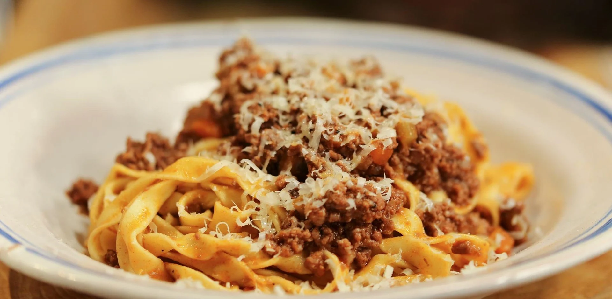

Ragu alla Bolognese
Home
Chocolate Chip Cookies
Israeli Couscous & Scallops

Ragu alla Bolognese is a rich, slow-simmered meat sauce from Bologna, Italy, renowned for its depth of flavor and comforting heartiness. Traditionally made with a blend of ground beef and pork, finely chopped onions, carrots, celery, tomatoes, and a touch of milk or cream, the sauce is gently cooked for hours to create a velvety, deeply savory ragu. Unlike quick tomato-based sauces, Bolognese is all about the slow melding of meat, vegetables, and aromatics into a luxurious, thick sauce. Served with tagliatelle, layered in lasagna, or spooned over polenta, ragu alla Bolognese is a timeless expression of Italian culinary tradition and patience.
Ingredients
- 400g fresh pasta - tagliatelle or fettucine
- 300g ground beef
- 150g unsmoked pancetta
- 50g celery - finely chopped
- 50g carrot - finely chopped
- 50g onion - finely chopped
- 30g triple concentrated tomato paste
- 1/2 glass red or white wine
- 180ml whole milk
- olive oil
- Salt and pepper to taste
Directions
- Fry the pancetta gently in olive oil until it starts to melt. Be careful not to burn.
- Add the vegetables and fry until the onions are transparent, stirring occasionally
- Add the beef and cook until lightly browned.
- Add the tomato puree and wine and mix well.
- Add the milk, slowly until it is completely absorbed.
- Season with salt and pepper to taste, cover, and simmer on low for 3 to 4 hours.
- Stir occasionally (every 30 minutes) and if it looks like it's drying out, add a little more milk.
- Serve with Fettuccine, Tagliatelle, or other another egg pasta.
- Top with parmigiano reggiano and pepper.